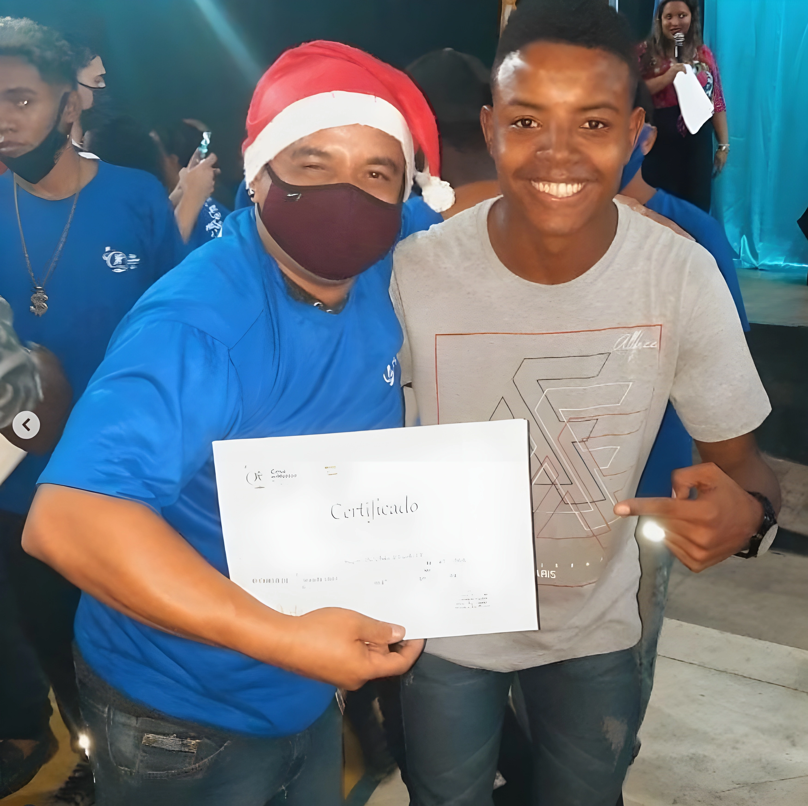

Conheça a história do Giovanni
A barbearia transformou a minha vida e pode transformar a sua também! Já ajudei centenas de pessoas a mudarem de vida, conquistando independência financeira e respeito na profissão. Quero te convidar para fazer parte dessa história de sucesso!
Comecei minha trajetória de forma humilde, enfrentando muitos desafios e superando obstáculos com dedicação. Sou apaixonado pela arte de cortar cabelo, busquei me especializar, estudei com os melhores e hoje sou referência no ensino de barbearia. Minha missão é inspirar e capacitar novos barbeiros, mostrando que é possível crescer e prosperar com honestidade, técnica e paixão pelo que fazemos.
O QUE OS ALUNOS ESTÃO FALANDO
“Acredite no seu potencial! A barbearia pode transformar vidas, assim como transformou a minha. Seja bem-vindo ao nosso time!”
— Giovanni Nogueira
"Top demais, professor o senhor sempre passa a visão certa sobre a vida e o corte de cabelo, um conteúdo super fácil de aprender e colocar em prática, e que você sempre ajude as pessoas com seu conhecimento professor tmj."
.jpg)
"Mano, teu curso é top demais! Tá valendo cada centavo, sério. As aulas são diretas, fáceis de entender, e as técnicas já tão fazendo a diferença nos cortes que faço aqui. Valeu demais por compartilhar tudo isso!"
.jpg)
"Excelente conteúdo e didática! O professor Giovanni explica cada detalhe com clareza, o que faz toda a diferença para quem quer realmente dominar a profissão. Recomendo muito!"
Você também é capaz de aprender, basta se dedicar e acreditar no seu potencial! Não importa de onde você veio ou quais desafios já enfrentou, sempre é possível dar um novo passo e transformar sua vida. Eu estou aqui para te ajudar, assim como faço com todos os meus alunos. Juntos, somos uma família que cresce, compartilha e vence! Venha fazer parte dessa história e descubra até onde você pode chegar!